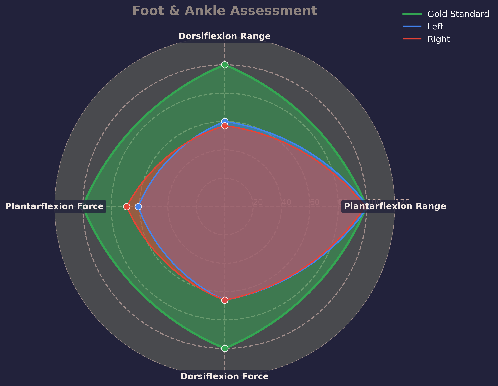

1. The Left foot: Your left rear foot had a centre of mass over the 2nd metatarsal which demonstrates you naturally stand in a neutral position. With your ankle in a state of dorsiflexion (knees over toes) you couldn’t evert and dorsiflex further than your resting position and as such had poor pronation. You were not able to supinate very effectively as there was little translation of this through your medial arch. Your left ankle had very poor range and strength in dorsiflexion. You also need to start building some more control and awareness.
2. The Right foot: Your right foot had the same resting position but had similar deficiencies in dorsiflexion force, as well as range. However, your dexterity and motor control on the right was much better.
3. Foot and Ankle summary: Asymmetry is there with poor range and strength at the left ankle. What was most notable was your inability to effectively articulate the bones of the mid-foot and dorsiflex the ankle, both of which go hand in hand in the gait cycle. There is a lack of movement and control through the fascia on the sole of the foot. Subconscious movement (not controlled gym based movement but more dynamic gait cycle movements) should be introduced along with motion to promote lengthening of the tissues in your foot. In order to generate force or contract, we must first lengthen the tissue through articulation.
